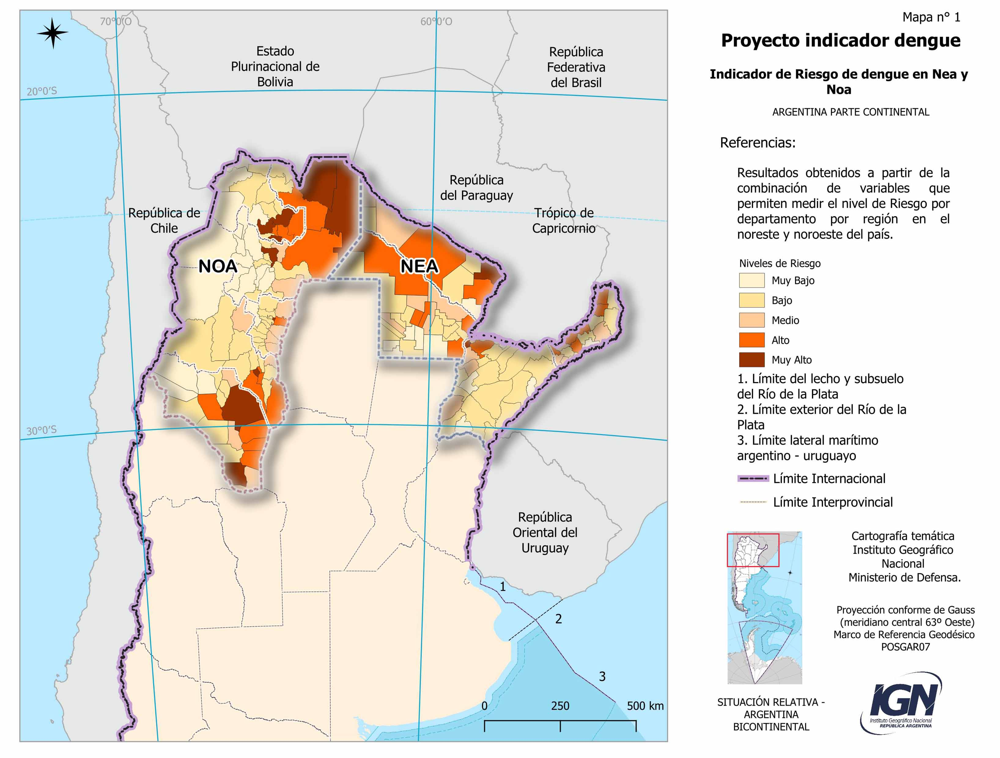
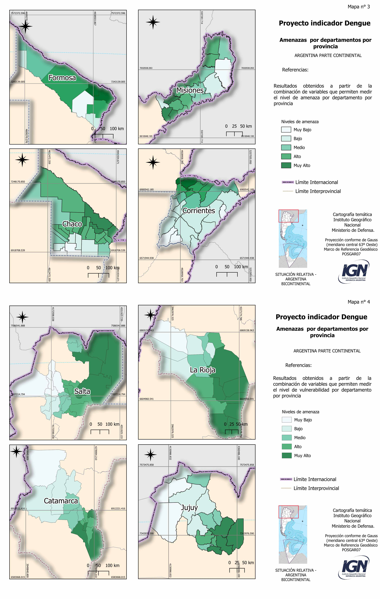
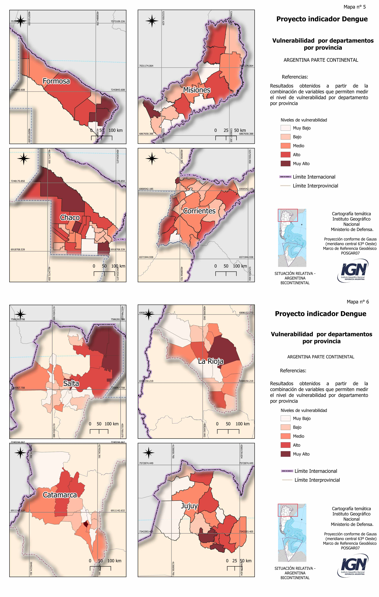
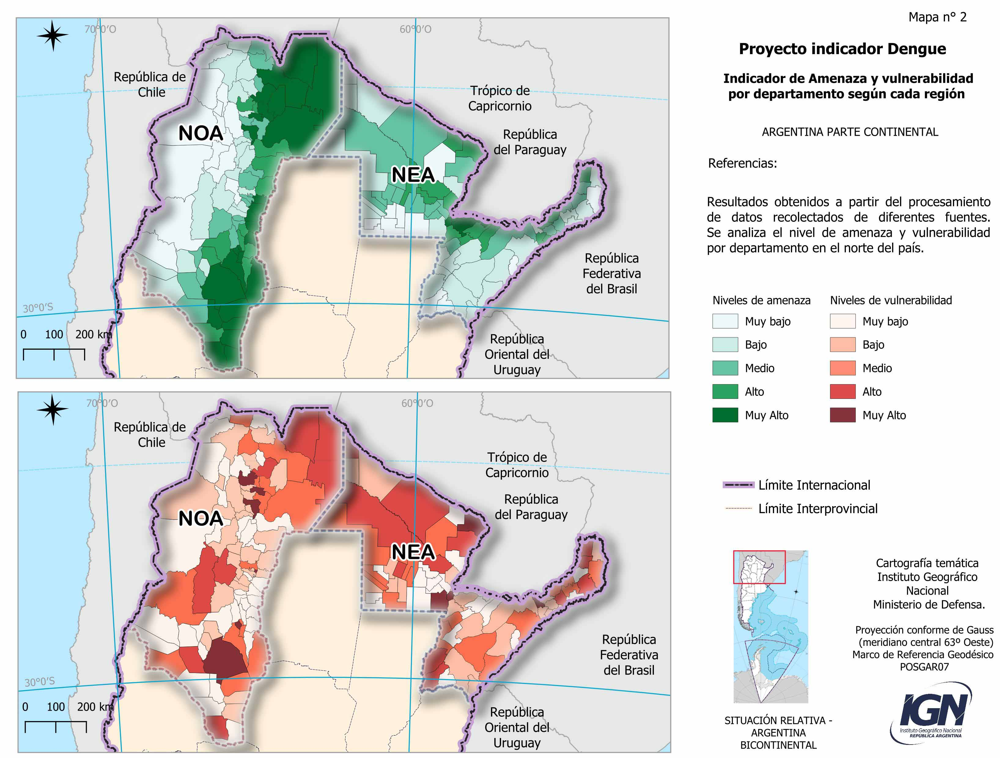

En esta sección se presenta un indicador que mide el riesgo de contraer dengue en Argentina, para el Noroeste y Noreste del país, trasmitido principalmente por el vector Aedes aegypti, por ser las zonas que han evidenciado la mayor presencia de casos en los últimos cinco años. El Gráfico 1 muestra los casos totales de Dengue en Argentina, pero al analizar la distribución de casos a nivel departamental se observa que el mayor porcentaje corresponde a las provincias del NEA y NOA. En el visor de mapas de riesgo en IG-GIRD puede observarse la distribución por departamentos a lo largo de los años.
Fuente: Sistema de Información. MAyDS, 2023.
La metodología empleada en este indicador se divide en tres etapas:
En la primera etapa se llevó a cabo una revisión exhaustiva de estudios previos existentes que permiten comprender cómo se han abordado los riesgos biológicos en contextos similares. La revisión bibliográfica permite recopilar variables utilizadas en investigaciones anteriores a fin de elaborar indicadores vinculados a la temática. Luego, a lo largo de la segunda etapa se seleccionaron las variables clave que permitieron analizar la amenaza y la vulnerabilidad del área elegida. La elección es fundamental para definir posteriormente el nivel de riesgo ya que permite focalizar el análisis en los aspectos más críticos y que tienen mayor relevancia para el contexto específico de estudio. Para determinar el nivel de amenaza se consideraron factores como las condiciones climáticas (temperatura, precipitación y vapor de agua) propicios para el desarrollo del virus en el mosquito y su posterior proliferación, elementos claves para la transmisión del dengue.
Para evaluar la vulnerabilidad de la población, se seleccionaron variables que permiten medir tanto la susceptibilidad de ser picados, considerando el contexto en el que vive la población, como sus capacidades preventivas basadas en el nivel de conocimientos y acceso a medidas de prevención. Para eso, se tomaron en cuenta las condiciones de la vivienda, el nivel de estudio, la procedencia del agua y la densidad poblacional. En esta instancia de trabajo se calculó la vulnerabilidad absoluta.
Luego de recopilar dicha información, se utilizó R, un lenguaje de programación con su correspondiente entorno de software especializado en el análisis estadístico y la visualización de datos. Gracias a esta herramienta, se clasificaron los datos en intervalos que permitieron maximizar las diferencias entre los grupos por medio de rupturas naturales. Se decidió realizar este procedimiento a fin de encontrar aquellos puntos donde ocurren cambios más significativos en la distribución de los valores de las variables. Al agrupar la información en clases, se generó una mejora en la diferenciación entre los diferentes niveles. Luego, se realizó una segunda ponderación basada en criterios propios asignando un peso específico a cada una de las variables. Esto permitió adaptar la investigación a los objetivos previamente planteados. Una vez obtenidos los valores, se realizó nuevamente una ruptura natural - pero esta vez en Qgis- y se establecieron 5 niveles ya sea de amenaza como de vulnerabilidad, siendo el 1 el nivel más bajo y el 5 el nivel más alto. Esto permitió realizar una comparación de ambos componentes según cada departamento (hacia dentro de cada provincia).
Por último, para medir el nivel de Riesgo, se sumaron ambas columnas y se estableció una escala que va del 1 al 10 utilizando como base el cuadro de doble entrada propuesto por Vazquez Brust et al. (2012).
A fin de visualizar toda la información, se construyó cartografía temática que representa todos los datos procesados, pero en este caso a escala regional, permitiendo así establecer una comparación entre departamentos y por región.
A lo largo del trabajo existieron algunas limitaciones a considerar. Si bien se pudo acceder a datos sobre la distribución del vector Aedes aegypti, los mismos se encuentran definidos por departamento y no a un nivel de mayor desagregación evitando un registro geográfico más detallado. Por otro lado, si bien el enfoque se centra en la relación entre el Dengue y las condiciones socioeconómicas, entendemos que esta no siempre es directa. Existen casos reportados por otros organismos que muestran brotes en áreas no necesariamente vinculadas a bajos recursos. Este hallazgo sugiere que otros factores contextuales, como patrones de movilidad o condiciones ambientales locales, también juegan un rol importante y deberían ser integrados en futuros modelos.
Más allá de estas limitaciones, consideramos que el estudio ofrece una base sólida para continuar investigando y mejorando los niveles de riesgo de Dengue, con el objetivo de desarrollar estrategias más efectivas para su prevención y control.

Gracias a la construcción del indicador y el mapeo de sus resultados se puede observar la distribución espacial de los distintos niveles de riesgo de dengue en las áreas seleccionadas. En el mapa 1 se pueden apreciar los niveles más altos de riesgo de la región NOA en los departamentos ubicados al este de la provincia de Salta y Jujuy, así como también en el este de la provincia de La Rioja. Por su lado la región del NEA presenta departamentos con altos niveles de riesgo más dispersos mayormente en las provincias de Chaco y Formosa.
El mapa 2 nos ayuda a interpretar los valores de riesgo del mapa 1, observando por separado sus dos componentes: los niveles de vulnerabilidad y amenazas de origen físico natural. Se distinguen las amenazas de nivel alto (es decir altas temperaturas, abundante precipitación y alto contenido de vapor de agua) distribuidas de manera homogénea en la zona del este de la región NOA, coincidiendo con el lado oriental de las cadenas montañosas. En el caso del NEA, los niveles de amenazas tienden a ser más bajos en general y distribuidos de forma más heterogénea.
En cuanto a los niveles de vulnerabilidad se observan niveles altos en los centros más poblados como las ciudades de S. M. de Tucumán, Salta S.S. de Jujuy, S.F del Valle de Catamarca y La Rioja, relacionado a las bajas condiciones socioeconómicas y de la vivienda, y los altos niveles de densidad poblacional. Al haberse tomado los valores absolutos, los valores más altos coinciden con las zonas de mayor cantidad de población. En una segunda etapa se calcularán los valores relativos a valores regionales y provinciales.
Los mapas hasta aquí comentados muestran los resultados por región. A continuación se muestran los resultados del indicador analizados al interior de cada provincia. (Mapas 3 y 4 accesibles desde los “botones”).


